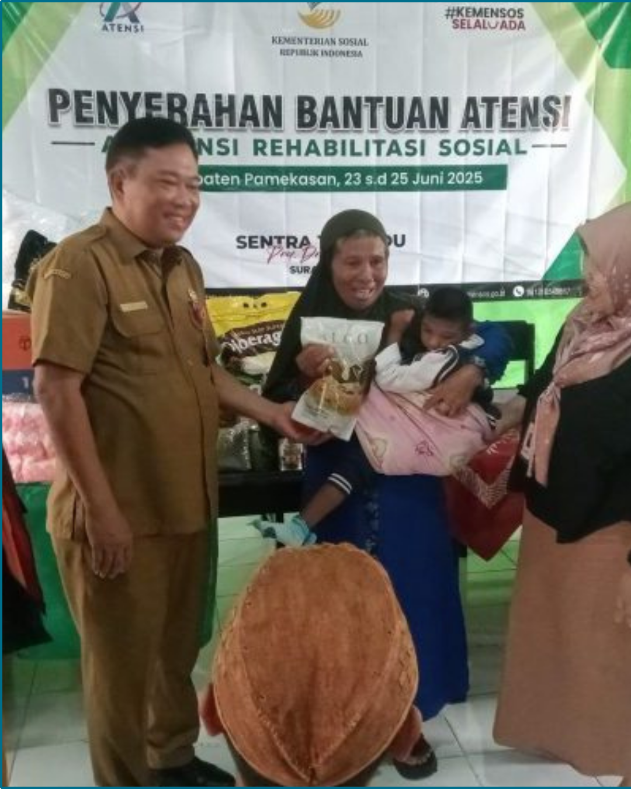

Portal Informasi dan Berita Resmi

Cilegon, 4 Mei 2026 — Dinas Sosial Kota Cilegon menyalurkan bantuan sosial "Jaminan Sosial Cilegon Bermartabat (JSCB) Lansia & Disabilitas Tahun 2026" kepada 2.720 Keluarga Penerima Manfaat (KPM).
Penyerahan simbolis disaksikan oleh Wali Kota Cilegon pada 18 Mei 2026 di Kantor Cabang Bank BJB Kota Cilegon, dan penyaluran penuh diselesaikan pada 19 Mei 2026 melalui Bank BJB Cilegon. Setiap KPM menerima bantuan sebesar Rp1.000.000.
Program ini bertujuan meningkatkan kesejahteraan lansia dan penyandang disabilitas melalui bantuan tunai yang disalurkan setelah proses verifikasi data penerima.
Dinas Sosial bertanggung jawab atas registrasi, verifikasi, dan koordinasi distribusi bantuan bekerja sama dengan Bank BJB Cabang Cilegon. Pelaksanaan lapangan melibatkan 21 Koordinator Program Keluarga Harapan (PKH) pada tingkat kelurahan dan kecamatan.
Dinas Sosial Kota Cilegon mengelola berbagai layanan sosial, meliputi rehabilitasi sosial, pemberdayaan masyarakat, perlindungan dan jaminan sosial, kebencanaan serta penanganan masalah sosial lainnya.
"Terwujudnya Cilegon Baru, Modern, dan Bermartabat."
Dalam rangka meningkatkan jangkauan dan pemahaman publik mengenai program bantuan sosial, Dinas Sosial menggelar roadshow ke 8 kecamatan dan 43 kelurahan serta memproduksi berbagai konten kampanye melalui media sosial Instagram @dinsoscilegon.
Ibu Intini, Kabid Perlindungan dan Jaminan Sosial
Tel : (0254) 389209
Fax : (0254) 38209
Email : dinsos@cilegon.go.id